Glättung
Smoothing
Zusammenfassung
Die Glättung ist eine gängige Technik zum Entfernen von Rauschen aus Signalen. Origin enthält mehrere Glättungsmethoden, einschließlich dem gleitenden Durchschnitt, Savitzky-Golay, dem Rangordnungsfilter und dem FFT-Filter. Zusätzlich steht ein Wavelet-basiertes Hilfsmittel zur Verfügung.
Im Fall von Matrixdaten wird Origins Glättung durch zwei verschiedene Methoden durchgeführt. Wenn die Anzahl der Spalten oder Zeilen weniger als 32 ist, wird die Matrix zuerst erweitert und dann auf ihre ursprüngliche Größe zurück geschrumpft. Wenn die Anzahl mehr als 31 beträgt, wird die Matrix zuerst geschrumpft und dann erweitert.
Was Sie lernen werden
Dieses Tutorial zeigt Ihnen, wie Sie:
- Signale mit verschiedenen Methoden glätten.
- Signale mit Wavelets glätten.
- Eine 3D-Oberfläche glätten.
Glättung mit verschiedenen Methoden
- Öffnen Sie eine leere Arbeitsmappe. Wählen Sie Hilfe: Ordner öffnen: Sample-Ordner ... im Menü, um den Ordner "Samples" zu öffnen. Öffnen Sie in diesem Ordner den Unterordner Signal Processing. Dort befindet sich die Datei Signal with High Frequency Noise.dat. Ziehen Sie diese Datei per Drag&Drop in das leere Arbeitsblatt, um sie zu importieren.
- 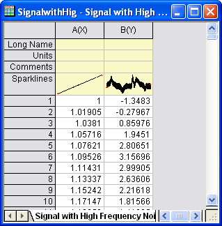
- Markieren Sie Spalte B im Arbeitsblatt. Wählen Sie dann im Menü Analyse: Signalverarbeitung: Glätten (wenn das Hilfsmittel zuvor bereits genutzt wurde, müssen Sie auf Dialog öffnen klicken), um den Dialog Glätten: smooth aufzurufen.
Gleitender Durchschnitt
Die Methode des gleitenden Durchschnitts führt eine breite Glättung der Daten durch.
- Wählen Sie die Option Gleitender Durchschnitt für Methode. Setzen Sie die Punkte des Fensters auf 100 und Grenzbedingung auf Periodisch. Um das Ergebnis im rechten Bedienfeld anzuzeigen, aktivieren Sie das Kontrollkästchen Automatische Vorschau.
- 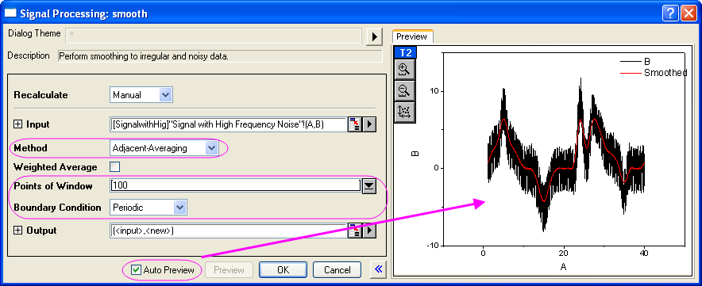
- Klicken Sie auf OK, um das Ergebnis zu erzeugen.
Savitzky-Golay
Die Methode Savitzky-Golay eignet sich gut, um die Form der Peaks von Signalen zu bewahren.
- Markieren Sie erneut Spalte B. Klicken Sie im Menü Analyse auf Signalverarbeitung: Glätten: Dialog öffnen....
- Setzen Sie im Dialog smooth die Methode auf Savitzky-Golay. Setzen Sie die Punkte des Fensters auf 100, die Grenzbedingung auf Periodisch und die Polynomielle Ordnung auf 3.
- 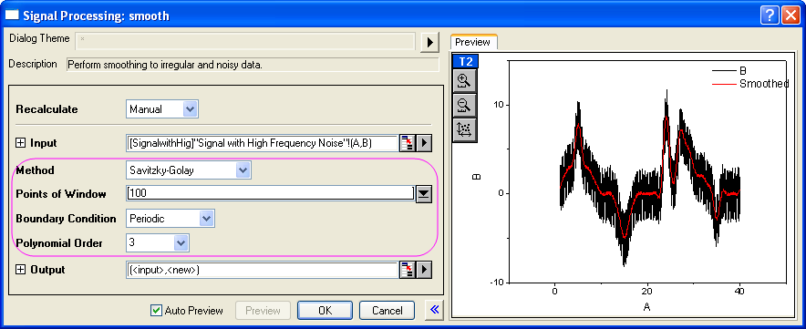
- Klicken Sie auf OK.
Rangordnungsfilter
- Markieren Sie erneut Spalte B. Klicken Sie im Menü Analyse auf Signalverarbeitung: Glätten: Dialog öffnen....
- Wählen Sie die Methode Rangordnungsfilter. Setzen Sie Punkte der Fenster auf 100, Grenzbedingung auf Periodisch und übernehmen Sie den Standardwert 50 für das Perzentil.
- 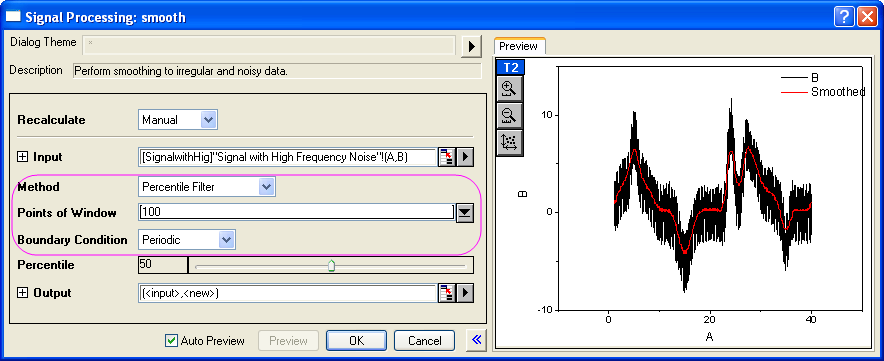
- Klicken Sie auf OK.
FFT-Filter
- Markieren Sie erneut Spalte B. Klicken Sie im Menü Analyse auf Signalverarbeitung: Glätten: Dialog öffnen....
- Setzen Sie die Methode auf FFT-Filter. Setzen Sie die Punkte des Fensters auf 100.
- 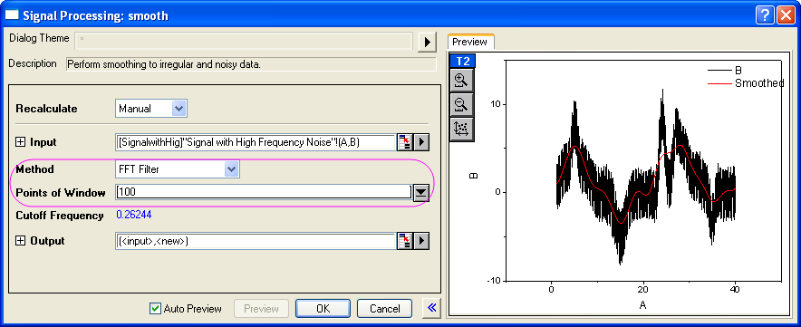
- Klicken Sie auf OK, um den Dialog zu schließen.
- Beachten Sie, dass sich in dem Arbeitsblatt nun vier hinzugefügte Spalten befinden, die die Ergebnisse Ihrer vier Glättungsoperationen enthalten. Markieren Sie diese vier Spalten (C, D, E, F) und wählen Sie dann im Menü Zeichnen: 2D: Linie: Liniendiagramm, um ein Liniendiagramm mit diesen vier Datensätzen zu erstellen.
- 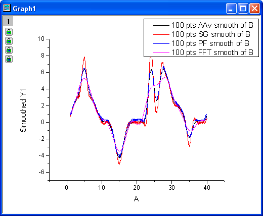
- Beim Vergleich der Ergebnisse der vier Methoden können Sie sehen, dass die Savitzky-Golay-Methode die Peaks in den Daten am besten bewahrt hat, während der FFT-Filter sich dazu am wenigsten geeignet hat.
Glättung mit Wavelet
- Öffnen Sie eine neue Arbeitsmappe. Wählen Sie Hilfe: Ordner öffnen: Sample-Ordner ... im Menü, um den Ordner "Samples" zu öffnen. Öffnen Sie in diesem Ordner den Unterordner Signal Processing. Dort befindet sich die Datei Signal with High Frequency Noise.dat. Ziehen Sie diese Datei per Drag&Drop in das leere Arbeitsblatt, um sie zu importieren.
- Markieren Sie Spalte B und wählen Sie im Menü Analyse: Signalverarbeitung: Wavelet: Glätten, um den Dialog Smooth: wtsmooth zu öffnen.
- Setzen Sie im Dialog Wavelet-Typ auf DB6 und Abschneiden (%) auf 98. Aktivieren Sie die Automatische Vorschau, um das Ergebnis im rechten Bedienfeld in der Vorschau anzuzeigen.
- 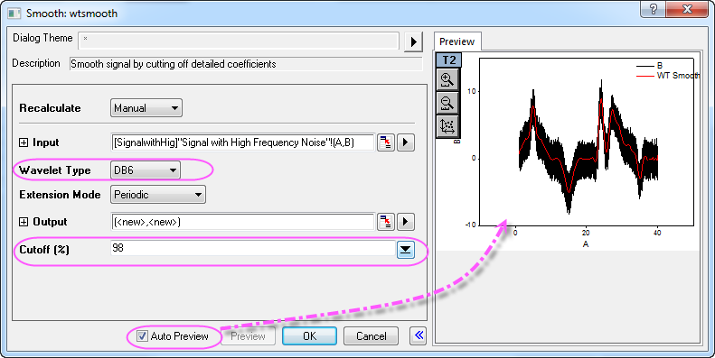
- Klicken Sie auf OK, um den Dialog zu schließen und das Ergebnis zu erzeugen.
- Um die Differenz zwischen dem ursprünglichen und dem geglätteten Signal zu sehen, markieren Sie alle Spalten in dem Arbeitsblatt. Wählen Sie dann im Menü Zeichnen: 2D: Linie: Liniendiagramm.
- 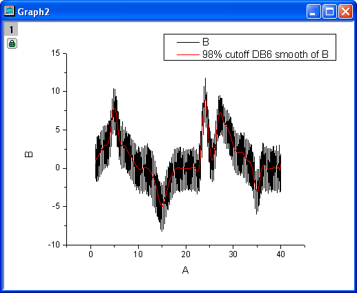
Matrix glätten
- Öffnen Sie eine neue Matrixmappe.
- Wählen Sie im Menü Daten: Aus Datei importieren: Bild in Matrix, um das Bild scale.jpg im Ordner <Origin-Verzeichnis>\Samples\Image Processing and Analysis\ zu importieren (wenn der Dialog impImage geöffnet wird, übernehmen Sie einfach die Standardeinstellungen und klicken Sie auf OK).
- Origin kann keine Glättung für ein Bild durchführen, deswegen müssen Sie das Bild zuerst in Matrixdaten umwandeln. Wählen Sie im Menü Bild: Konvertierung: In Daten konvertieren. Akzeptieren Sie die Standardeinstellungen und klicken Sie auf die Schaltfläche OK.
- Wählen Sie bei aktiver konvertierter Matrix im Menü Ansicht: Bildmodus, um diese Matrix als Bild anzuzeigen.
- 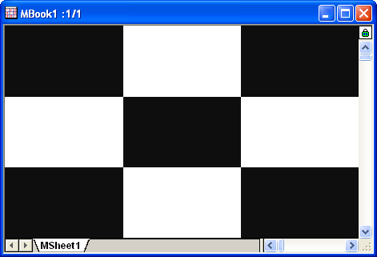
- Zum Durchführen der Glättung wählen Sie Analyse: Signalverarbeitung: Glätten. Der Dialog Glätten: msmooth wird geöffnet.
- 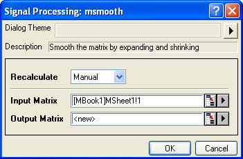
- Übernehmen Sie die Standardeinstellungen und klicken Sie auf OK. Um das Ergebnis anzuzeigen, wählen Sie Ansicht: Bildmodus im Menü.
- 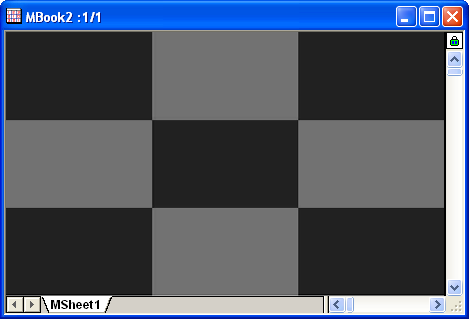